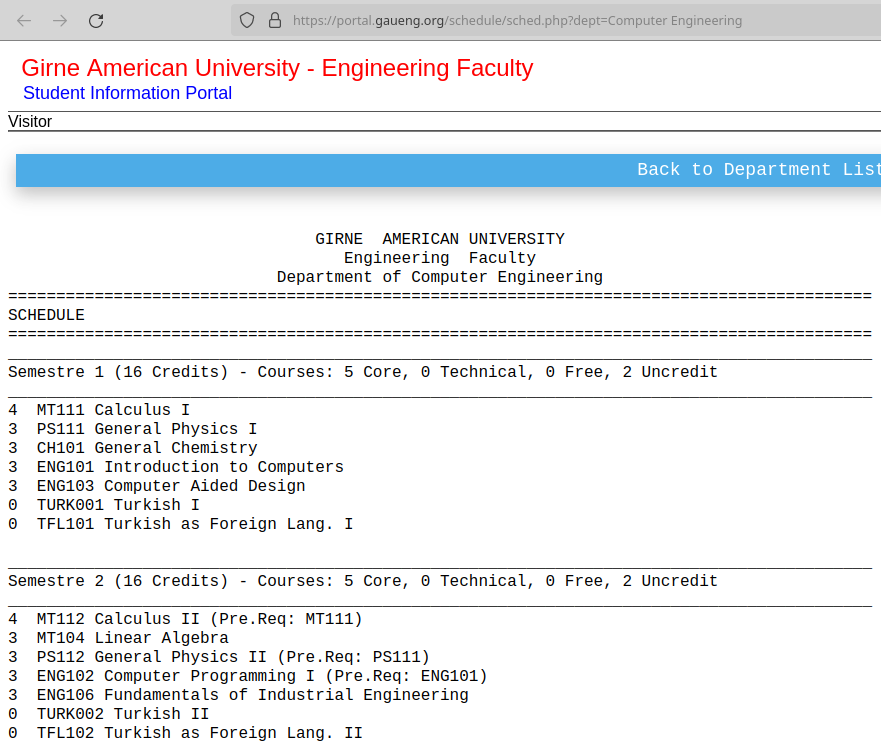
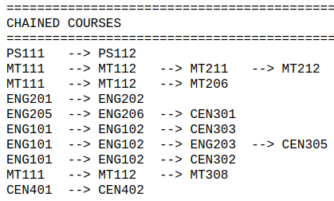

Curriculum
Visit Department schedules. Choose your department. For example, let’s choose Computer Engineering. You see the list of courses to be taken semester by semester. In your first semester, you will take 6 courses. If you are a national student, you will take TURK001. Otherwise, if you are an international student, you will take TFL001.

Credits
The numbers on the left of the courses are credits. Most of the courses are worth 3 credits. Higher the credit of a course, higher the impact of the course on your performance (GPA). You will earn the credit by passing the course. Once you earn enough credits, you fulfill one the requirements to graduate. Visit specific department in Departmental schedules to see required credits to graduate. For example, for Computer Engineering, you have to earn 132 credits to graduate.
The credit of TURK001 or TFL101 is 0. This kind of courses are called non-credit courses. Even if you fail, it will not affect you GPA.
Compulsory and elective courses
Most of your courses are compulsory while some of them are elective. You have to take passing grades from all compulsory courses to graduate. There are two kind of elective courses: Free and technical. You are free to take any free elective course you wish. However, technical elective courses are engineering courses and should be approved by your advisor.
Prerequisite/chained courses
Some courses must be taken in order. For example, you have to get a passing grade from PS111 to take PS112 as shown in Department schedules below. Therefore, PS111 is a prerequisite of PS112.

Course descriptions
Visit Catalogue, for course descriptions.
Grading
Table below shows letter grades. Credit courses are graded with letters from A to NG (Nil Grade). Failure in attending 75% courses would result in NG which is similar to F but even worse since you also lose the right to take resit (repetition of final exam) and graduation make-up examinations. Uncredit courses such as TFL101 or TURK001 are graded with letters S and U.
After every semester, your Grade Point Average (GPA) will be calculated. GPA is an indicator of semester’s academic performance. It is rated out of 4.00. If you get A from all of the semester courses, you GPA will be 4.00.
Average of GPAs is called Cumulative Grade Point Average (CGPA). In order to graduate you have to have at least 2.00 CGPA. Most post-graduate programs (MSc and PhD) require at least 3.00 CGPA so, make sure your CGPA is higher than 3.00 or even 3.50.
| Letter grade | Score interval | Coefficient |
|---|---|---|
| A | 90-100 | 4.00 |
| A- | 85-89 | 3.70 |
| B+ | 80-84 | 3.30 |
| B | 75-79 | 2.70 |
| C+ | 65-69 | 2.30 |
| C | 60-64 | 2.00 |
| C- | 55-59 | 1.70 |
| D+ | 50-54 | 1.30 |
| D | 45-49 | 1.00 |
| F | 0-44 | 0.00 |
| NG (Nil Grade) | - | 0.00 |
| S (Satisfactory) | - | 0.00 |
| U (Unsatisfactory) | - | 0.00 |
Examinations
Midterm and final exams are regular exams. You can take make-up examination which is a replacement of midterm exam as long as you provide medical proof for your excuse of absence. You can repeat final exam if get letter grade of F. This type of examination is called resit exam. There are also graduation make-up exams which can be taken by students which are about to graduate.
You need exam cards to attend face-to-face exams. Type of exam card (printed or electronic) may differ. See you faculty secretary for up-to-date information.
Read Exam rules prior to attending exams.
Recommendation on studying
Follow a textbook related to the course along with lecture notes/slides if available. If the course lecturer follows a textbook, find and follow the PDF of the textbook. If the lecturer does not follow a textbook, find and follow a suitable generic PDF of the textbook that is related to the course.
Study daily and avoid procrastination. Make sure your main job is being a student. Starting studying a week before any examination is a very risky strategy.